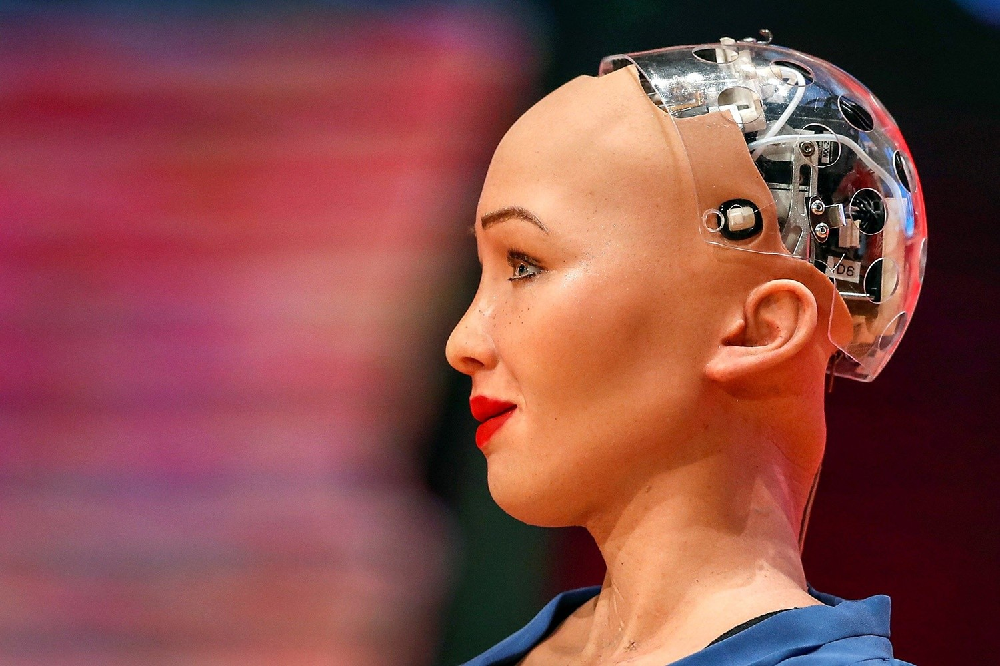

THE FUTURE OF ADVANCED ROBOTICS
This company was formed in 2024 under a joint operation of two big companies in uganda. We are interested in making dynamic Robotics that will soon change the face of our country in IT. We allow advise from different ICT personel as along as you have postive idea about our project.
Our Motto:
"Robotics is our thing".
It is like this because we want to encourage the new Generation, (Gen-Z) or Generation Z to be
more creative in whatever they are doing, from simple programs to artifical intelligent machines which acn reason on their own.
This company was formed in 2024 under a joint operation of two big companies in uganda. We are interested in making dynamic Robotics that will soon change the face of our country in IT. We allow advise from different ICT personel as along as you have postive idea about our project.
"Robotics is our thing".